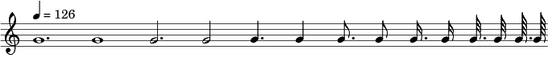

Технология за писане на ноти на български народни песни
Н. Киров
1. Ноти
Имената на нотите са малките латински букви от a до g. Нотите са относителни - в
началото се задава гама с \relative
c'. Следващата нота е
най-близката, независимо от гамата. Нотата от по-ниска гама се получава
със запетя, от по-високата - с единична кавичка.
\relative c' {
c4 d c e c f c g c a c2
c4 d' c d, c'' b c,, c
}
Дължините на нотите се задават с число или c число и точка след името
на нотата. Осминки и по-малки ноти могат да са единични или свързани.
\relative c'' {
\tempo 4 = 126
\cadenzaOn
g1. g1 g2. g2 g4. g4 g8.\noBeam
g8 g16.\noBeam g16 g32.\noBeam g32 g64.\noBeam g64
}
\layout {
\context
{
\Staff \remove "Time_signature_engraver" }
}

\relative c'' {
\time 2/4
\times 2/3 { g4 f e } g8.[ g16]
g16[ a b c] \times 2/3 { g8[ a g] }
\times 4/5 { g32[ a b c d] } g,8
}
Ноти без опашки, скрити ноти, паузи.
fixB = { \override Stem
#'transparent = ##t }
fixC = { \override Stem
#'transparent = ##f }
\relative c' {
d4 \fixB e f \fixC g
g2 \hideNotes a \unHideNotes g4 r r2
}
2. Връзки - легато, лигатура, глисандо
Легатото свързва ноти, които се пеят на една сричка (гласна).
Лигатурата свързва еднакви по височина ноти.
noteFi = { \once \override Stem
#'X-extent = #'(2 . 4) }
\relative c' {
\override Glissando
#'style = #'zigzag
c4( d8) g2~ g8 e16[( d c d])
g4.(~ g8 a4)
g4\glissando c \noteFi
c16(\glissando f, g4.)
\set Score.measureLength =
#(ly:make-moment 5 4)
c2 c2\glissando \hideNotes f,4
\unHideNotes
\set Score.measureLength =
#(ly:make-moment 4 4)
a1
}
3. Диези, бемоли и др.
Диез се поставя с окончание "is"
към
нотата,
бемол - с окончание "es",
а
бекар - с "!". Когато е
в сила диез или бемол от предишна нота, той се пише, но не се
отпечатва. Когато искаме знакът задължително да се отпечати, добавяме
"!". Бекар се отпечатва автоматично. Знак важи до края на такта,
а в безмензурните песни - до края на песента. Затова там обикновено
знаците се слагат задължително.
\relative c'' {
g4 gis f4. gis8 | gis4 aes a
aes | a1 |
bes4 bes! bes!2 | g!4 ges2.
}
В някои песни има знаци за 1/4 повишаване/понижаване от турския
мелодичен тип макам (makam). В този случай трябва да използваме новите
означения и за нормалните диез, бемол и бекар.
\include "makam.ly"
\relative c' {
c4 cc db fk
gbm4 gfc gfb efk
fk4 db cc c
}

4. Украсителни ноти
Има два вида украсителни ноти: поставени преди основната нота
(форшлак), или след нея. За първият вид се използва \acciaccatura или \grace, а за вторият вид - \afterGrace. Тъй като вложени
легато не са позволени, легатото на украсителните ноти се получава с
"фраза" - \( ... \).
Чертичката на единични осминки е дефинирана с stdBE.
stdBE = { \once \override Stem
#'stroke-style = #"grace" }
\relative c' {
\acciaccatura c8 d4 \acciaccatura
{ g16[ f] } e4 e2
\grace { \stdBE a8( } g4) \grace
{ f16[( e] } g4) g2
c4( \grace { \stdBE a8\( } g4\))
c c
\afterGrace a4( { \stdBE g8) } f4
e2
\afterGrace a4(\( { \stdBE g8\) }
f4 e2)
\acciaccatura f8 \afterGrace g4\(
{ f16[ g]\) } g4 g2
}

5. Темпо
Темпо се задава с \tempo x = y,
където
x е дължина на
нота с означения 1, 2, 4, ... а y е брой такива ноти за
минута. Има и по-сложно задаване.
\include "Rhythm_marks.ly"
\relative c' {
\override Score.RehearsalMark
#'self-alignment-X = #LEFT
\once \override
Score.RehearsalMark #'X-offset = #8
\rhythmMarkA \rhyMarkAAdot
#"80"
d4 d d d e e e e f f f f
}

\include "Rhythm_marks.ly"
\relative c' {
\override Score.RehearsalMark
#'self-alignment-X = #LEFT
\once \override
Score.RehearsalMark #'X-offset = #8
\rhythmMarkA \rhyMarkCdot
#"120-132"
d4 d d d e e e e f f f f
}

6. Такт
Такт се задава с \time в
началото или за смяна на такта по средата на песента. Може да се
промени скрито дължината на такта, ако се налага да се използват скрити
ноти (при глисандо без крайна или начална нота и при вариант с една
нота в такта).
\relative c'' {
\time 3/8
a8 b\noBeam c | \time 5/8 c8
b\noBeam a[( g a]) |
\set Score.measureLength =
#(ly:make-moment 2 4)
c4 c |
\set Score.measureLength =
#(ly:make-moment 5 8)
d4 d8 d4
}
Срещат се и по-сложни тактове.
tsMarkup =\markup {
\override #'(baseline-skip . 2)
\number {
\column { "13" "16" }
\vcenter "+"
\column { "9" "16" }
}
}
\relative c'' {
\override Staff.TimeSignature
#'stencil = #ly:text-interface::print
\override Staff.TimeSignature
#'text = #tsMarkup
\time 22/16
\set Score.measureLength =
#(ly:make-moment 13 16)
g8 g\noBeam g16([ a)] f8. d4 |
\set Score.measureLength =
#(ly:make-moment 9 16)
c8 d16.([ e16.)] f4
}
Безмензурни песни се пишат по следния начин, като \tempo е задължително.
\relative c' {
\tempo 4 = 126
\cadenzaOn
c1 d4 d16 d2 r32 e64[( f g]) a1
}
\layout {
\context
{
\Staff \remove "Time_signature_engraver" }
}

7. Текст под нотите
Текст на песента под нотите с подчертаване на рефрен.
\version "2.12.3"
\score {
\relative c' {
\tempo 4 = 152
\time 2/4
e8( f) g4 | g8( aes) g( f) |
\acciaccatura f8 e2 | f4 g | aes g8 f |
e4 f | g g8( f) | \acciaccatura
f8 e2 | e4 e | e2
\bar "|."
}
\addlyrics { И- ван си Ра- ди гу-
во- ри, ма- \startTextSpan ри, \stopTextSpan
И- ван си "в го-" ра о- ти- де }
%
\layout {
\context {
\Lyrics
\consists "Text_spanner_engraver"
\override TextSpanner #'direction = #DOWN
\override TextSpanner #'style = #'line
\override TextSpanner #'outside-staff-priority = ##f
\override TextSpanner #'padding = #0.2 % sets the distance of the line
from the lyrics
\override TextSpanner #'bound-details =
#`((left . ((Y . 0)
(padding
.
0)
(attach-dir
.
,LEFT)))
(left-broken
.
((end-on-note
.
#t)))
(right
.
((Y
.
0)
(padding
.
0)
(attach-dir
.
,RIGHT))))
}
}
}
8. Допълнителни означения
Над петолинието могат да се поставят означения за промяна на
височината/изменение на тона (артикулация) или за
удължаване/съкращаване на нотата (динамика).
parS = {
\override
ParenthesesItem #'padding = #0.1
\override ParenthesesItem #'font-size = #-2
}
\relative c' {
d4\prall e\mordent
f^↑ g^↓
c^\markup\natural
c^\markup\flat c^\markup\sharp
a^\markup { \sharp }^↓
a2.^\markup\flat\prall g4^>
g1\fermata f2^\rtoe
f4^\ltoe \breathe f4\trill
\parS
d4-\parenthesize\prall
g-\parenthesize^↓
f2-\parenthesize^\ltoe
}
9. Варианти на песента
10. Форматиране на песен и на страница
11. Звуков (MIDI) файл